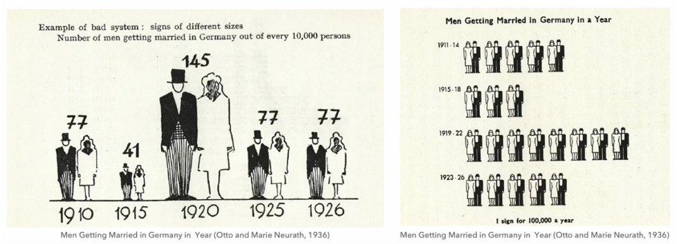
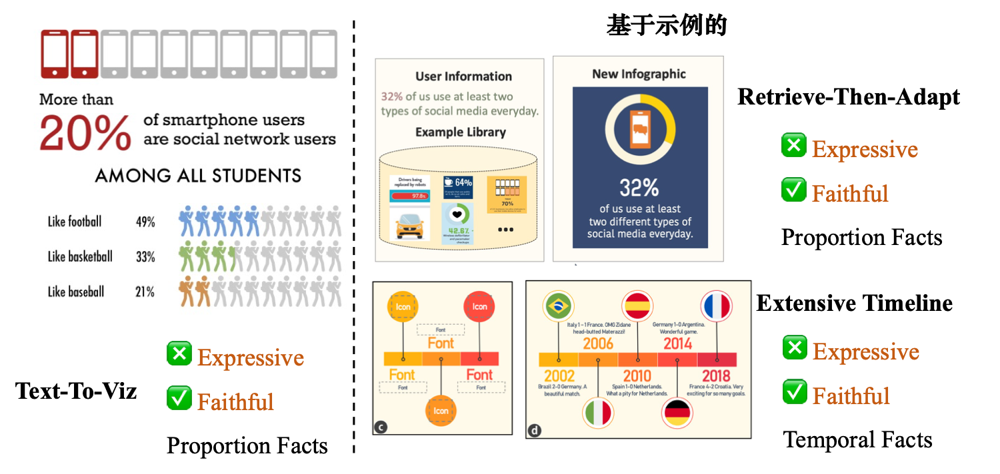
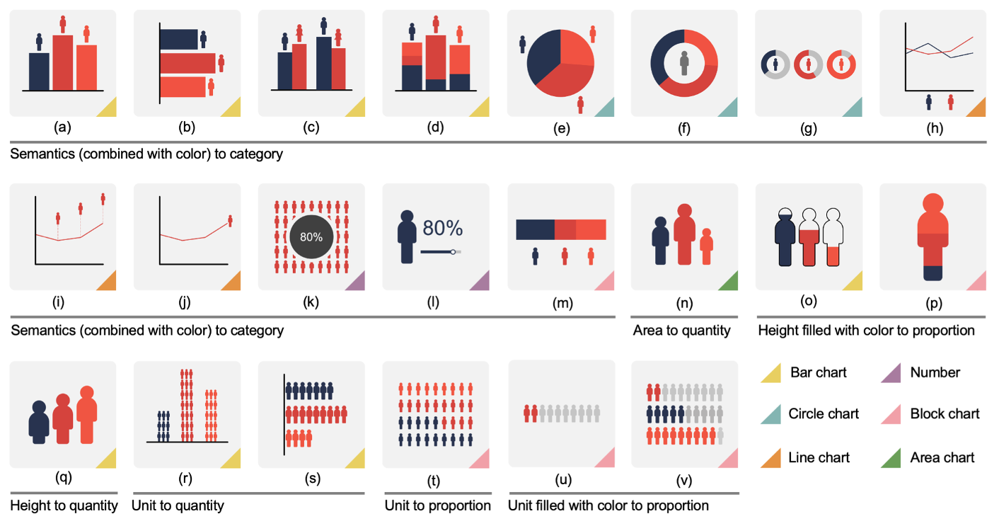
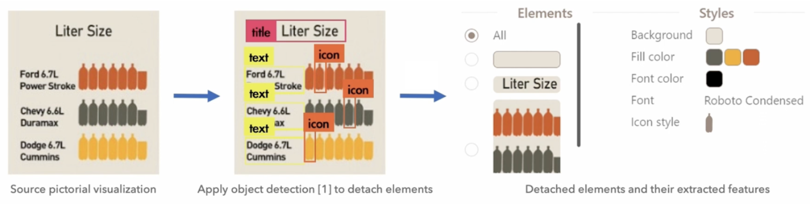
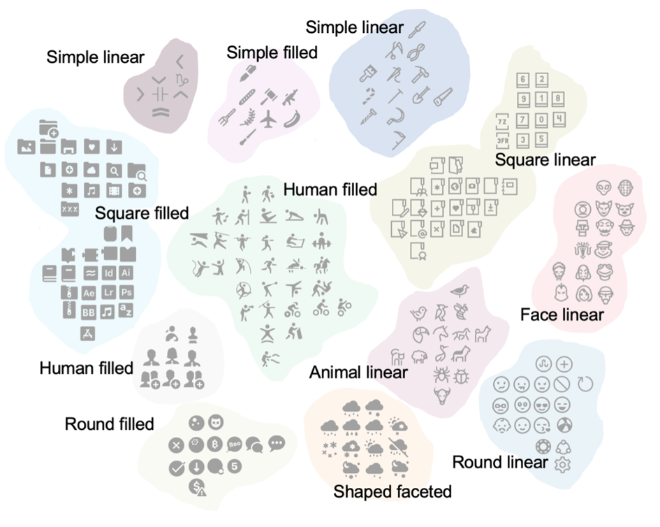
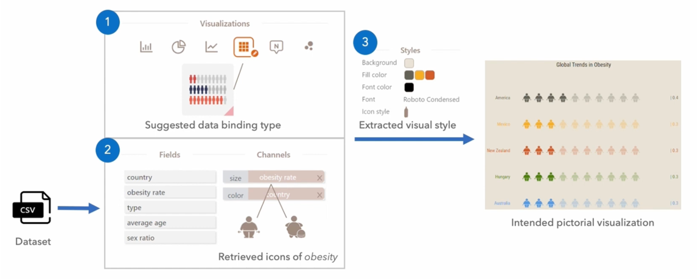
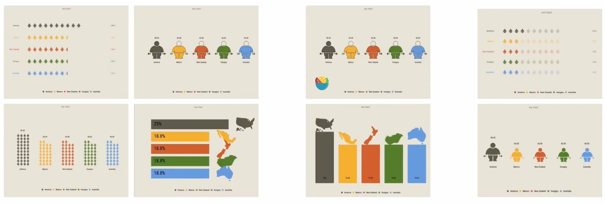

论文：Supporting Expressive and Faithful Pictorial Visualization Design with Visual Style Transfer
作者：Yang Shi, Pei Liu, Siji Chen, Mengdi Sun, and Nan Cao
发表：VIS 2022 (Honorable Mention Award)
图形可视化用形象的信息描绘数据，并使观众接近可视化。以往的图形可视化研究已经开发了创作工具或生成系统，但其方法仅限于特定的可视化类型和模板。本文建议用视觉风格迁移来增强图形可视化创作，实现更可扩展的可视化设计方法。为探索这一点，本文提出Vistylist，一种设计支持工具，将源图像可视化的视觉风格与其内容分离开来，并将视觉风格转移到一个或多个预期的图像可视化中。我们通过对图形可视化示例的调查、用户研究和一系列专家访谈来评估Vistylist。评估结果表明，Vistylist有助于创建富有表现力和忠实的图形可视化。
背景
图形可视化(Pictorial Visualization):
作为数据的一种可视化表示，使用基于icon的语言来可视化抽象的数据点或数据事实，e.g.

挑战：如何创造表达丰富(expressive)并且忠实数据绑定(faithful)的图形可视化
相关工作-数据驱动的AI辅助设计工具：
- Text-to-Viz：针对比例数据，使用自然语言生成图像可视化；虽然该方法自动地为比例数据进行忠实的数据绑定，但在很大程度上忽略了信息呈现的表现力，即基于有限的预定义视觉风格。
- Retrive-Then-Adapt：通过从其示例库中检索适当的示例来生成比例相关的图形可视化。
- Extensive Timeline：从时间轴图像中提取可扩展的时间轴模板以生成新的时间轴信息图形。

上述的方法仅限于特定的数据类型，如比例或时间数据，这些数据类型适应特定的现实世界场景。此外，他们的方法限制了示例中使用的可视化类型与结果中使用的可视化类型相同。也就是说，如果用户试图设计时间线信息图，用户必须首先搜索时间线示例。这种方法可能会降低图形可视化设计的表现力和灵活性。
贡献点
- 实现了设计工具Vistylist
- 通过将源图形可视化的视觉风格与其内容分离，然后将该风格转移到预期的图形可视化，从而促进图形可视化设计；
- 图形可视化的公开数据库
- 收集了一个包含1371个高质量图形可视化的数据集，并确定了一组设计模式；
- 数据集：https://idvxlab.com/vistylist/
- 评估
- 进行了调查、用户研究和一系列访谈；
- 评估结果表明Vistylist可以增加创建忠实和富有表现力的图像可视化的可能性；
初步研究
设计师访谈
为了了解设计师在创建图形可视化时的当前做法和挑战，我们对四个领域专家进行了形成性访谈，包括两个信息设计师(D1, D2)，一个数据分析师(A1)和一个数据记者(J1)。所有参加者均有超过四年的专业经验，在信息设计上较为专业。
采访的问题：
- 采用什么工作流程来创建图形可视化？
- 工作流的哪些部分使用现有工具易于管理或难以管理?
- 会建议现有工具使用哪些潜在功能来促进图形可视化创作?
总结的设计需求：
DR1：确定通用的设计模式，分为可视化类型和数据绑定类型
DR2：能从源图形可视化中提取描述视觉风格的关键元素
DR3：生成时要考虑icon的使用要语义相关
DR4：从相似性、美学和灵感的角度，提供多套替代设计
图形可视化的分析
数据库构建
- 初筛
- 相关研究之前总结的数据：anthropographics, infographics, data videos
- 利用Text-To-Viz生成
- 可视化社区: flowingdata, eagereyes
- 模板创作工具: Canva, Visme
- 谷歌搜索pictographs/pictorial visualizations/ pictograms…
- 规则筛选
- 排除timeline和flow chart
- 确认是否数据驱动
- 数据确定信息和参数
- 至少使用一种可视化方法
- 使用了象形的icon
- 打标签
- 标签：可视化类型和数据绑定类型
- 体系确定：
- 两人分别对其中25%的数据打上标签
- 合并相似，讨论分歧，打完所有的标签➡️ Cohen’s Kappa=0.93
- 对少数分歧重新讨论➡️100%意见一致
DR1:设计模式
6种可视化类型，7种数据绑定类型:

DR2:提取风格相关的关键元素
作者确定颜色、字体和图标风格是需要提取的关键元素。
为了进行元素提取，文章应用了Lu等人提出的最先进的目标检测方法之一，该方法扩展了YOLO，能够区分文本、图标、索引和箭头四类信息图数据元素。从源图形可视化中分离出标识元素(文本和图标)之后，提取了它们的特征，如下所示：

- 颜色
- 使用K-means聚类方法从源图形可视化中提取背景颜色、字体颜色和配色方案;
- 使用Kita等人提出的调色板评级模型对提取的配色方案进行扩展，以匹配数据基数。比如提取了一个M-color调色板，同时提供了一个K-category数据属性，Vistylist会建议K-M个更和谐的颜色;
- 字体
- 使用DeepFont，利用了自适应的卷积神经网络(CNN)，可以识别英文文本行的字体；DeepFont能够识别150种字体，如AmericanaStd和HelveticaLTStd-Roma；
- 图标风格
- 首先从网上收集图标作为图标资产(iconfont等)，img-title对；
- 形成了一个包含3,233个图标的集合，其示例类别包括人物、食物和城市；
- 使用孪生神经网络(SNN)来衡量风格一致性：SNN将输入图标映射到256维特征空间，并比较图标对之间的欧氏距离。距离越近，两个图标之间的风格越一致；

DR3:生成
- 之前总结的22种图表，用户选择一种可视化类型后，可建议对应的一种；
- 用户建立属性-通道的对应后，自动得到语义相关的icon；
- 将提取的视觉风格(颜色、字体、图标)转换为预期的图形可视化；

DR4:多套设计方案
为了提出可供选择的图形可视化设计，考虑了三个不同的标准，包括相似性、美学和灵感，计算如下：
- 相似性
- 为了评估源图形可视化和预期图形可视化之间的相似性，使用simhash（保持相似性的一种讲维方法）将源图像转换为高维特征向量，然后将特征向量转换为64位指纹。
- 通过使用余弦距离比较源图像和预期图像的指纹，衡量它们之间的相似性。
- 美学
- 从颜色和布局两个角度来衡量图形可视化的美学。
- 在颜色方面，提出了颜色和谐度和颜色区分度不佳度，分别衡量相邻颜色对视觉效果的影响和亮度的显著差异;
- 在布局上，遵循两个设计原则，即留白和平衡；留白评估的是元素是否组织在稳定和常规的布局中，平衡要求元素在整个布局中均匀分布。
- 灵感
- 建议包括上图的22个设计模式，相对于用户最初指定的设计模式，反映不同设计模式的建议。

评估
主要分为三部分：
- 和Retrive-Then-Adapt的对比研究
- User Study
- Expert Interview
具体内容不在此赘述。
讨论与研究
- 讨论
- 动画
- 探索跟情感相关的属性 embodiment-related properties
- 伦理和抄袭的问题
- 局限
- 特征提取部分可能会产生令人不满意的结果，这取决于图像可视化的质量和内容。
- 有问题的不匹配或原型图标检索。有参与者则担心设计不良的图标可能意味着性别不平等，如社会不平等和玻璃天花板。这些不令人满意的推荐可能会影响数据的忠实描述，或导致可视化设计，使有害的刻板印象永久化。
- 颜色分配的组成部分采用了简单的策略，忽略了为可视化选择语义上共振的颜色。
AI的概念如何在可视化中使用：
文章提到了AI的风格迁移，AI中风格可能和颜色、笔触等相关，而文章将风格定义为图形可视化中的颜色、字体、图标风格。
✉️ zjuvis@cad.zju.edu.cn